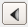
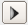

The basic principle of the segmentation editor is to first select voxels and then to assign, subtract, and replace etc. the selected voxels to or from the current active material. A basic set of tools working with selections are described in the following:
All slices / Current slice: Lets you choose to operate on All slices or just the Current slice i.e., if you have selected All slices, all the selection tools described below will operate in 3D mode. For example, the Clear button clears the whole 3D selection, not only the current slice. In order to warn the user, all selection tools will show red colored icons instead of gray ones indicating that voxels are selected, which aren't visible within the current 2D viewer slices.
Show in 3D: Lets you display the current selection within the 3D viewer. On slower computers or for very large data sets, this may become slow.
Clear: This button lets you clear the current selection. If All slices is activated, the selection is cleared in all slices.
Replace: This button tries to replace a selected region. Assume you want to modify the contours of some region. As long as the new contours fully enclose the previous ones this can be easily achieved using the "+" button. However, if the new region is smaller, things are more complicated. The replace button looks for connected regions under the current selection belonging to the current material. Pixels which belong to such a region but which are not selected are automatically assigned to some other neighboring material. Selected pixels are assigned to the current material. In this way a replacement is performed.
Add: This button adds all selected voxels to the material currently selected in the material list. Voxels assigned to a locked material are not affected. If the Shift key is held down while clicking the button, the voxels remain selected. Otherwise the selection is cleared afterwards.
Subtract: This button lets you subtract all selected voxels belonging to the current material from that material, provided the current material is not locked. The pixels are automatically assigned to some neighboring material which is interpreted as a local background.
 Previous: This button displays in the active 2D viewer the slice previous to the current slice (lower slice number) that contains at least one selected voxel (red overlay). If no such slice exists, clicking this button doesn't change the current 2D viewer slice position at all.
 Next: This button displays in the active 2D viewer the next slice after the current slice (higher slice number) that contains at least one selected voxel (red overlay). If no such slice exists, clicking this button doesn't change the current 2D viewer slice position at all.
Shrink: This filter performs a morphological erosion of the current selection, i.e., the selection is made smaller by one pixel in every direction. The filter can be applied to the current slice only (shortcut is Ctrl -), to all slices (orientation is defined by the active viewer), or to the whole volume. You can access this command also though the item Selection in the menu bar.
Grow: This filter performs a morphological dilatation of the current selection, i.e., the selection is made bigger by one pixel in every direction. The filter can be applied to the current slice only (shortcut is Ctrl +), to all slices (orientation is defined by the active viewer), or to the whole volume. You can access this command also though the item Selection in the menu bar.
{kind=link}